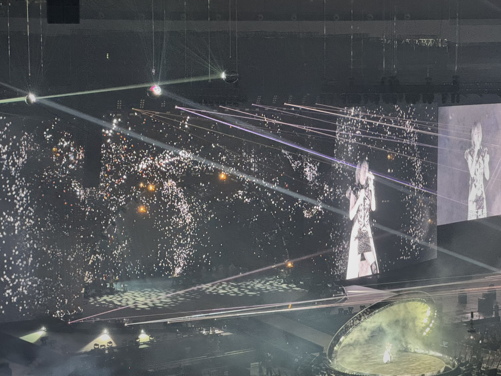
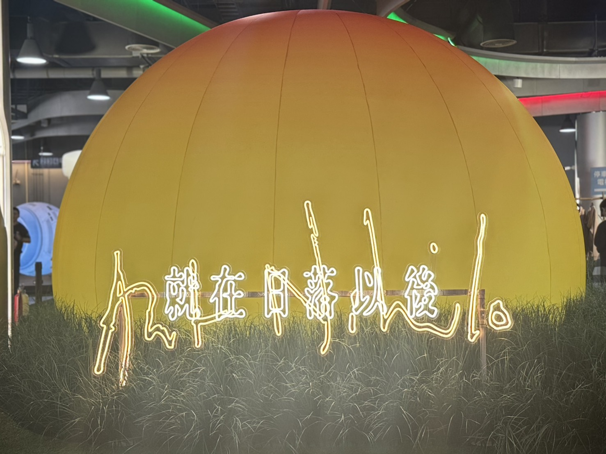

遇見
第三次聽燕姿的演唱會，很幸運地搶到了票。
記得第一次搶票是在2014年，那時候演唱會沒現在普遍，聽演唱會還是不全民運動，購票要去便利商店的機台排隊，而不是在網路搶票。那一天中午開始售票，我大概提前一兩個鐘頭就到住處附近的全家排隊了，到的時候人數不算多，但因為是第一次機台購票，有點慌亂，需要兩張票的我，竟然只選了一張。還好，我很幸運地有搶到第二張票，只是兩個位置相隔得有點距離。
第二次是去年，時隔十一年，燕姿終於又來台灣開演唱會。為了能夠買到票，他開了MyVideo串流平台的黑卡會員，以便取得購票序號的名額。號稱燕姿粉絲的他，很認真的準備了很久，順利地搶到了序號，等於拿到了門票的保障。購票當天，他沒搶到最貴的那一區，而我搶到了較便宜的票價，完成了第二次聽演唱會的夢想。
這一次，燕姿來到了台北大巨蛋。他一樣研究了搶票的策略，有一項是國泰世華cube卡友的序號方案，他問我有沒有，我有，但要有小樹點299以上，我也有。所以這次換我搶序號。搶序號前，他叫我一定要多練習幾次，但練習實在不是我的風格。不過我還是乖乖地試了用點數換禮品，免得到時候空有資格卻卡在程序上。這次的練習倒也沒白練，補足了一些資料，確保到時候能順利搶到序號。
終於到了搶序號的那一天，我很忐忑，很怕手速一慢就錯過了保障購票的門檻。我記得上次他搶序號時說，他會把時鐘打開，算好時間按下去，免得錯失一兩秒的時間。這次，我一樣打開了時鐘，看著秒針慢慢地跑著，就在時間快到的時候，點了進去，但我忘了要買哪一場，看了一下，不管就是17號了，這一天是他的生日也是小狐狸的。數字選對了，我搶到了序號！
他超開心地在FB炫耀，他說三次演唱會能買到票都是「老婆」的功勞。

想想這倒是真的，演唱會的票不好搶，有些演唱會的票怎麼搶就是搶不到，譬如劉德華。感覺和燕姿的緣分就是不一樣。
還記得2000年，燕姿剛出道，電視上剛好播放著她的〈天黑黑〉，一開始覺得旋律好聽、聲線獨特，隨著歌詞我想到了阿嬤。聽到「天黑黑欲落雨，天黑黑欲落雨」的時候，覺得台語老歌非常親切，是小時候會哼唱的旋律，「老老的歌安慰我」這句歌詞確實安慰著我。後來在各大媒體看到關於她的報導，一個來自新加坡的女生、高學歷等等話題，都讓我留下很不錯的印象。
他生日那一天，我們相約信義計畫區看電影，忘了是電影開場前還是散場後了，看到個小舞台，有人在台上唱歌。我一看是孫燕姿，怎麼這麼巧，覺得很開心可以看到本人。他問我說：「這是誰？」我跟他說：「是孫燕姿，她唱歌很好聽，我們去聽聽。」我們就在台下聽完了〈超快感〉、〈愛情證書〉、〈天黑黑〉三首歌。印象中的燕姿，好瘦好瘦，但歌聲很有力量。
這一次的巧遇，對我來說只是剛好遇到了一個蠻喜歡的新人歌手，但對他來說卻是遇見了「真愛」。他馬上買了專輯，去了簽唱會，拿到她的親筆簽名，後來買了燕姿的每一張專輯，且珍藏著。
燕姿的歌，就這樣陪著我們走過大學、研究所時期，某種程度見證了我們的愛情。
2004年10月，他入伍當兵。燕姿發行了「Stefanie」，是她暫別歌壇休息一年後推出的新專輯，〈同類〉是這張專輯裡我最喜歡的一首歌。也許是因為氛圍很對。十月出片，天氣剛好轉涼，加上這首歌的情緒是深沉、孤獨的，跟我當時的心情非常符合。「雨後的城市，寂寞又狼狽，路邊的座位 它空著在等誰」，「風停了又吹 我忽然想起誰。天亮了又黑，我過了好幾歲。心暖了又灰，世界有時候孤單的很，需要另一個同類」。人在孤單的時候，總想著這世界上有沒有人和我一樣的「同類」，回憶很美，但能抓住的又有多少？
退伍後的他忙著工作，而我也忙著研究所的課業，在情感走調的這段時期，燕姿發了新專輯，〈我懷念的〉是我專輯中最有感觸的一首歌，當時跟學妹在KTV裡含著淚水唱著「我問為什麼 那女孩傳簡訊給我」「我懷念的是無話不說，我懷念的是一起作夢，我懷念的是爭吵以後還是想要愛你的衝動。我記得那年生日，也記得那一首歌。記得那片星空，最緊的右手，最暖的胸口。誰記得，誰忘了」，兩個心碎的人還相約晚上要喝酒暢飲。
中間的分合，在2010年畫上句點，十多年的愛情長跑，我們決定攜手一生。結婚請帖上我選用了燕姿〈愛情證書〉的歌詞：「我們用多一點點的辛苦，來交換多一點點的幸福，就算幸福還有一段路。等我們學會忍耐和付出，這愛情一定會有張證書，證明從此不孤獨。」結婚等於給了愛情一張證書，是我當時的感覺，而且燕姿的歌陪我們走過了愛情歲月。
婚後沒多久，燕姿也結婚了，她比我們晚了大約半年，卻比我更早當了媽媽。懷孕、生子是女人一生中的大事，即使中間經過許多艱難，當聽到寶寶來到了這個世界上的第一次哭聲時，心中的喜悅與心情是難以言喻的。只是滿月後沒多久的她，就得托付給遠在高雄的奶奶代為照料，我們兩週才能南下看她一次。
2014年燕姿正式復出，發行了〈克卜勒〉，並且展開了巡迴演唱會。她說〈克卜勒〉是懷孕時錄製的，也是兒子聽了反應最大的一首歌。我相信，因為我對它也超有感。演唱會那天，她在台上唱著「一閃一閃亮晶晶，好像你的身體，藏在眾多孤星之中還是找得到你，掛在天上放光明，反射我的孤寂。提醒我，我也只是一顆寂寞的星星。」我在台下，想起了遠在高雄的女兒，眼淚止不住地流下。後來，將小孩接回台北自己照顧時，〈克卜勒〉成了我每天哄睡小孩的搖籃曲。

二十六年的時間，就這麼過去了，燕姿說台北是第一個擁抱她的城市，在這裡她有許許多多的回憶，陪我們走過這麼多人生風景的她，依然在舞台上唱著。